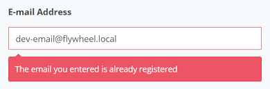
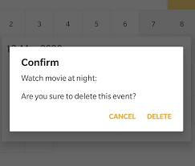

Oryginalna treść i tłumaczenie
EN: Good error messages are important, but the best designs carefully prevent problems from occurring in the first place.
PL: Dobre komunikaty błędów są ważne, ale najlepsze projekty przede wszystkim zapobiegają pojawianiu się problemów.
Przykład ze strony internetowej

Źródło: Ultimate Member Docs – email validation
Przykład z aplikacji mobilnej

Źródło: Stack Overflow – Android AlertDialog